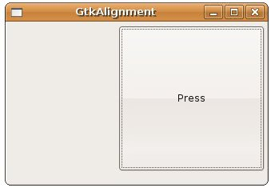
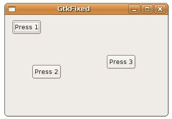

GtkAlignment實際上是GtkContainer的子類，可以設定它當中的子元件對齊與大小：
GtkContainer
+----GtkBin
+----GtkAlignment
+----GtkBin
+----GtkAlignment
GtkAlignment可以設定四個數值，xalign、yalign、xscale與yscale，可設定的值為0.0到1.0。xalign設定元件的靠左（0.0）或靠右對齊（1.0），yalign設定元件的靠上（0.0）或靠下對齊（1.0），如果兩個值都設定為1.0則無作用。xscale與yscale設定元件如何擴展以填滿所配置的空間，0.0表示無需填滿，1.0表示完全填滿。
下面的範例是個簡單的示範：
- gtk_alignment_demo.c
#include <gtk/gtk.h>
int main(int argc, char *argv[]) {
GtkWidget *window;
GtkWidget *button;
GtkWidget *alignment;
gtk_init(&argc, &argv);
window = gtk_window_new(GTK_WINDOW_TOPLEVEL);
gtk_window_set_title(GTK_WINDOW(window), "GtkAlignment");
gtk_window_set_default_size(GTK_WINDOW(window), 320, 200);
button = gtk_button_new_with_label("Press");
alignment = gtk_alignment_new(1, 0.3, 0.5, 0.9);
gtk_container_add(GTK_CONTAINER(alignment), button);
gtk_container_add(GTK_CONTAINER(window), alignment);
g_signal_connect(GTK_OBJECT(window), "destroy",
G_CALLBACK(gtk_main_quit), NULL);
gtk_widget_show_all(window);
gtk_main();
return 0;
}執行的結果如下所示：

GtkFixed也是GtkContainer的一個子類，它允許元件依所設定的位置來自由擺放：
GtkContainer
+----GtkFixed
+----GtkFixed
您可以使用gtk_fixed_put()來指定位置擺放元件，使用gtk_fixed_move()來移動元件至指定的位置：
void gtk_fixed_put(GtkFixed *fixed,
GtkWidget *widget,
gint x,
gint y);
void gtk_fixed_move(GtkFixed *fixed,
GtkWidget *widget,
gint x,
gint y);
GtkWidget *widget,
gint x,
gint y);
void gtk_fixed_move(GtkFixed *fixed,
GtkWidget *widget,
gint x,
gint y);
一個簡單的範例如下所示：
- gtk_fixed_demo.c
#include <gtk/gtk.h>
int main(int argc, char *argv[]) {
GtkWidget *window;
GtkWidget *button1, *button2, *button3;
GtkWidget *fixed;
gtk_init(&argc, &argv);
window = gtk_window_new(GTK_WINDOW_TOPLEVEL);
gtk_window_set_title(GTK_WINDOW(window), "GtkFixed");
gtk_window_set_default_size(GTK_WINDOW(window), 320, 200);
button1 = gtk_button_new_with_label("Press 1");
button2 = gtk_button_new_with_label("Press 2");
button3 = gtk_button_new_with_label("Press 3");
fixed = gtk_fixed_new();
gtk_fixed_put(GTK_FIXED(fixed), button1, 10, 10);
gtk_fixed_put(GTK_FIXED(fixed), button2, 50, 100);
gtk_fixed_put(GTK_FIXED(fixed), button3, 200, 80);
gtk_container_add(GTK_CONTAINER(window), fixed);
g_signal_connect(GTK_OBJECT(window), "destroy",
G_CALLBACK(gtk_main_quit), NULL);
gtk_widget_show_all(window);
gtk_main();
return 0;
}一個執行的結果如下所示：

GtkLayout使用則與GtkFixed類似，不過提供的是無限捲動區域，您可以參考 GtkLayout 文件說明 或 Layout Container。